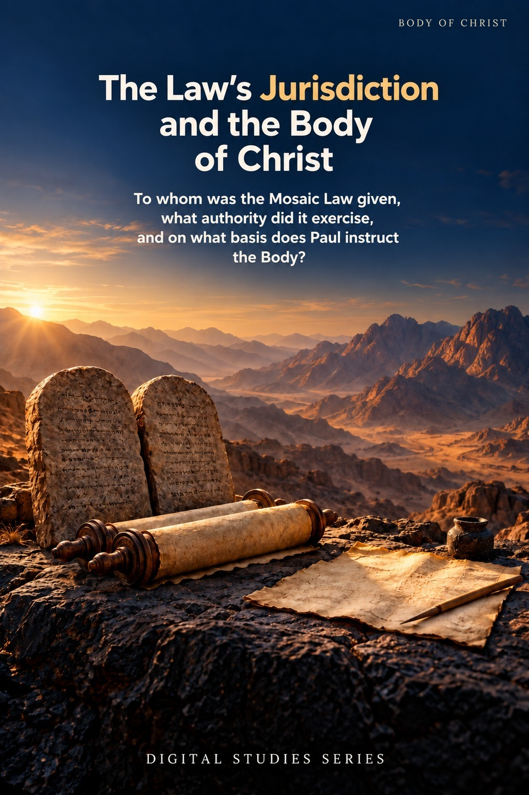
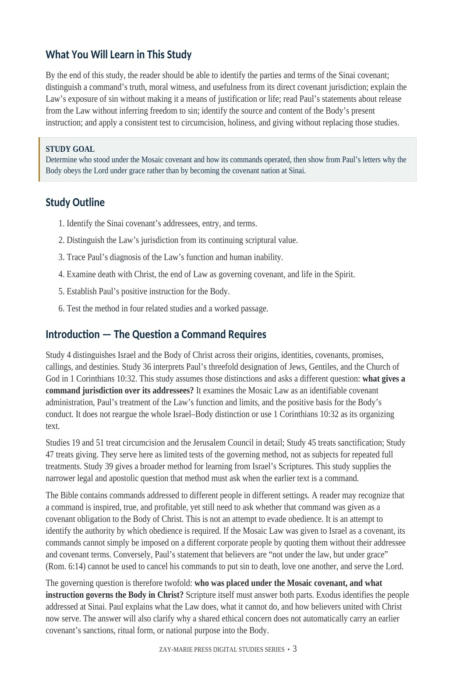
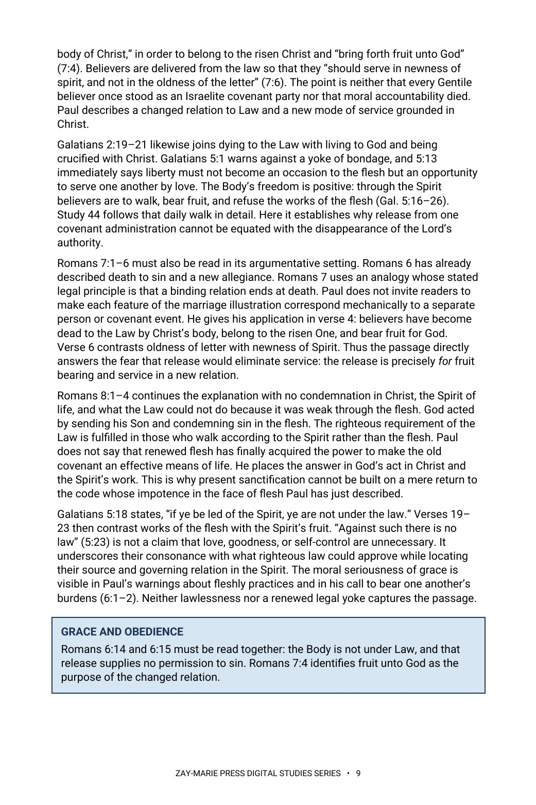

The Law’s Jurisdiction and the Body of Christ
To whom was the Mosaic Law given, what authority did it exercise, and on what basis does Paul instruct the Body?
Who stood under Sinai’s covenant, and who instructs the Body?
The Law was given to Israel in a named covenant. Its commandments exposed sin and governed the nation’s life, but could not justify or give life. Paul says believers in Christ are released from the Law’s covenant jurisdiction and called to obedient service under grace.
Study 59 follows the addressee, function, and limits of the Mosaic Law, then reads Paul’s positive commands to the Body. It explains how earlier Scripture remains profitable without making every reader a party to Sinai.
Ask Who a Command Governs
Exodus 19 names the children of Israel as the addressees of the Sinai covenant. Romans and Galatians identify what the Law accomplishes and what it cannot accomplish. Paul then instructs the Body as people united with Christ, serving in newness of Spirit rather than claiming Israel’s national covenant as their charter.
Study 4 establishes the broader Israel–Body distinction, while Study 36 explains Jews, Gentiles, and the Church of God in 1 Corinthians 10:32. Study 59 asks the narrower question of a command’s covenant authority. It supplies the governing test for the circumcision, sanctification, and giving issues treated fully in Studies 19, 45, 47, and 51.
How These Studies Relate
Study 59 tests the jurisdiction of Sinai’s commands and the source of the Body’s present obligations. The connected studies answer the neighboring identity questions and then examine particular cases in detail.
Study 4 — Israel and the Body of Christ Establish the two corporate identities before asking whether Israel’s covenant commands govern the Body.
Study 36 — Jews, Gentiles, and the Church of God Read Paul’s threefold designation in its practical context; Study 59 then asks which commands hold covenant authority over those he addresses.
Study 19 — The Jerusalem Council Examine Acts 15’s actual decision about circumcision and the Law for Gentiles after Study 59 supplies the jurisdiction question.
Study 51 — Circumcision Follow the sign’s Abrahamic and Mosaic history and the Body’s spiritual circumcision instead of treating the council’s dispute as the whole topic.
Study 45 — Sanctification Under Grace See how Paul commands holiness when the Body is not under Sinai’s covenant rule.
Study 47 — Giving Under Grace Test the difference between Israel’s tithe and Paul’s instruction for willing, accountable giving.
FROM THE PARABLES STRAND
The Good Samaritan shows the Law's neighbor-standard in its own setting — read it alongside this study's account of the Law's jurisdiction.
Trace Covenant Authority and Present Obedience
Named Addressees
Identify the people, terms, and assent at Sinai.
The Law’s Function
Distinguish exposure of sin from justification and life.
Release in Christ
Read Romans 6–7 without turning grace into license.
One New Body
Follow Ephesians 2’s account of common access in Christ.
Paul’s Commands
Identify concrete instruction given by the Lord to the Body.
Worked Applications
Test circumcision, holiness, giving, and Romans 13.
Read the Covenant and Paul’s Argument Together
Exodus 19:3–8
The Sinai covenant’s named recipients and terms.
Deuteronomy 5:1–3
Israel recalls the covenant made at Horeb.
Romans 3:19–28
Knowledge of sin and justification apart from deeds of the Law.
Romans 6:14–18; 7:1–6
Release from Law for obedience and fruit unto God.
Galatians 3:19–25
The Law’s appointed function in the history of promise.
Ephesians 2:11–18
Gentile distance and the one new Body in Christ.
1 Corinthians 9:19–21
Paul’s accommodation without being without law to God.
Romans 13:8–10
Earlier commandments cited within present instruction to love.
The Question a Command Requires
A Scripture’s authority and a covenant’s jurisdiction are related questions, but they are not the same question.
Identify the original addressee and terms, then trace how the risen Lord instructs the Body through Paul.
Preview the Study Before You Purchase
Click any page to enlarge it for reading.



Learning Outcomes and Study Goal
See the study’s controlling question and reading path.


Release and New Service
Read a substantive part of the Romans and Galatians argument.
A Focused Study of Covenant Jurisdiction
20-Page Digital PDF
Approved cover and 19-page numbered interior.
Nine Teaching Sections
A progressive textual argument from Sinai to Pauline instruction.
Comparison Tables
Keep covenant setting, present instruction, and related studies clear.
Five Callouts
Preserve the key interpretive and doctrinal controls.
Scripture-Tracing Exercise
Record addressees, terms, functions, and present obligations.
Teaching and Further Study
Use guided passages and related studies to test the case.
The Law’s Jurisdiction and the Body of Christ
20-page digital PDF · For personal use